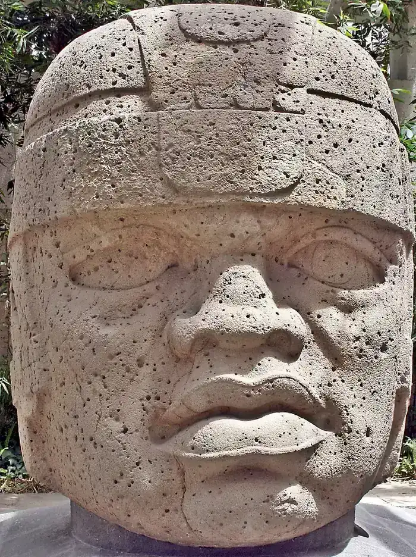
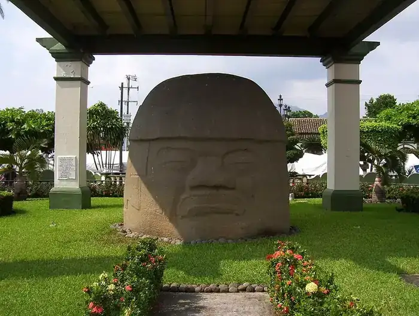
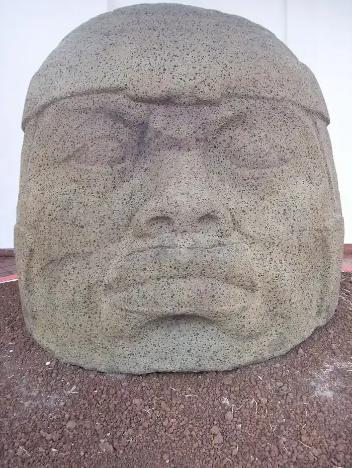

The objects
The Olmec civilisation of the Gulf Coast of Mexico carved more than a dozen colossal heads between roughly 1500 and 400 BC, from basalt. They are up to three metres high and weigh many tonnes, and they were moved from quarries in the Tuxtla mountains, tens of kilometres away.
Maps, diagrams and images






The claim
The claim that the heads depict Africans rests on the facial features and on the assumption that the Olmec could not have carved them. The archaeological reading is that the heads are portraits of rulers, wearing helmets, in a style consistent with other Olmec sculpture of the same figures.
There is no archaeological evidence of African contact in the period — no trade goods, no settlement, no genetic signal — and the quarrying and transport, while impressive, are documented from local sources.
Documented: the heads, their dates, their material and their source quarries.
Documented: the interpretation as ruler portraits.
Not established: African contact, or African identity for the figures.
Not supported: the claim that the Olmec could not have carved them.
The honest label: debunked.
Why it is in the archive
Because it is the case where the claim rests on an assumption about capability, and where the assumption is doing all the work.
Open resources on this topic
- PapersOpen-access articles: DOAJ · PubMed Central · Internet Archive Scholar
- BooksPublic-domain and borrowable copies: Open Library · Project Gutenberg · Google Books · Internet Archive
More images
Cite this page
Momin, S. (2026). The Olmec Heads as Africans. The Larger World Archive. https://drsamonline.github.io/LARGE_GLOBE/olmec-heads.htmlMomin, Sohil. “The Olmec Heads as Africans.” The Larger World Archive, 2026, https://drsamonline.github.io/LARGE_GLOBE/olmec-heads.html.Momin, Sohil. “The Olmec Heads as Africans.” The Larger World Archive, 2026. https://drsamonline.github.io/LARGE_GLOBE/olmec-heads.html.@misc{the2026olmec,
author = {Momin, Sohil},
title = {The Olmec Heads as Africans},
year = {2026},
howpublished = {The Larger World Archive},
url = {https://drsamonline.github.io/LARGE_GLOBE/olmec-heads.html},
note = {Last reviewed 20 November 2026}
}Last reviewed 20 November 2026 · Corrections policy · this page is not peer reviewed
Sources for this page
- Wikipedia, “Olmec colossal heads” — the monuments and the debateen.wikipedia.org
- Wikipedia, “Olmecs” — the civilisationen.wikipedia.org
- Wikipedia, “Basalt” — the materialen.wikipedia.org
- Wikipedia, “Pre-Columbian transoceanic contact” — the claim and its criticsen.wikipedia.org